Watchdoc / WSC - Mettre à jour en v. 6.1.1 à l'aide de l'assistant depuis une v. 6.1.x en domaine et en mode déporté
Contexte
La version de Watchdoc / WSC installée est une 6.1.x.
Watchdoc est installé en domaine (configuration master/slave) et mode déporté* (Watchdoc et IIS installés sur des serveurs différents).
Etapes
Lorsque vous avez préparé la mise à jour (cf. Mise à jour - Prérequis et préparation), passez aux étapes suivantes :
-
sauvegarder la précédente version du site web
-
vérifier la disponibilité de l'ancien site web
-
mettre à jour Watchdoc sur le master
-
vérifier la mise à jour de Watchdoc
-
mettre à jour WSC sur le master
-
vérifier la mise à jour de WSC
-
mettre à jour les autres serveurs (slaves) automatiquement
ou mettre à jour les autres serveurs (slaves) manuellement
Procédure
Sauvegarder la précédente version du site web
Principe
Cette procédure vise à sauvegarder la précédente version du site web de Watchdoc de manière à ce qu'elle reste opérationnelle durant la mise à jour. Il est possible de continuer à administrer les serveurs qui n'ont pas été mis à jour par via l'ancien site web.
Copier les dossiers Watchdoc
-
En tant qu'administrateur, rendez-vous sur le serveur qui héberge Watchdoc ;
-
rendez-vous dans le dossier d'installation de Watchdoc (ex C:\Program Files\Doxense\Watchdoc par défaut) ;
-
copiez ce dossier et collez-le dans un autre dossier temporaire ("C:\tmp\Watchdoc61", par exemple). Ce dossier doit rester intact durant la mise à jour de l'intégralité des serveurs. Vous pourrez le supprimer une fois la mise à jour validée ;
-
dans le dossier temporaire qui vient d'être collé, supprimez tous les sous-dossiers pour ne garder que les fichiers .dll et .bat :
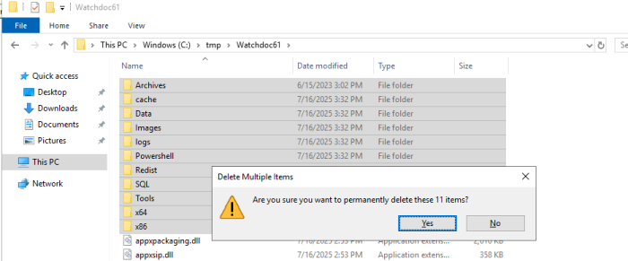
-
rendez-vous dans le dossier wwwroot de Watchdoc ("C:\inetpub\wwwroot\watchdoc" par défaut) ;
-
copiez/collez le dossier Watchdoc et renommez la copie "Watchdoc61" afin de conserver la version 6.1 du site web durant le temps de la mise à jour :
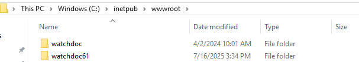
-
lancez l'outil Internet Information Services (IIS) Manager pour vérifier que le dossier Watchdoc61 est bien considéré comme un dossier et non une application :
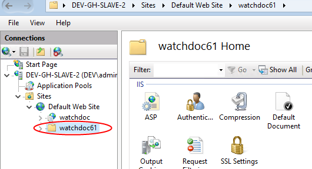
Si ce n'est pas le cas, recommencez l'étape 6 pour copier/coller le dossier.
-
Dans Internet Information Services (IIS) Manager cliquez-droit sur le dossier Watchdoc61, puis sélectionnez l'action Convert to application :
-
dans l'interface Add Application, complétez les paramètres :
-
Application pool: sélectionnez WatchdocPool ;
-
Physical path: saisissez le chemin d'accès au dossier Watchdoc61 : C:\inetpub\wwwroot\watchdoc61 par défaut ;
-
-
cliquez sur OK pour valider l'ajout de l'application :
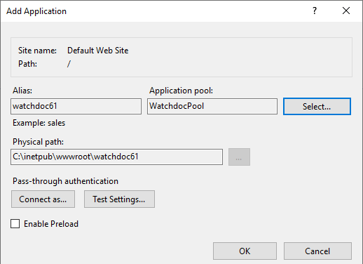
-
Dans Internet Information Services (IIS) Manager, cliquez sur l'icone ASP ;
-
dans la section Behavior > pour le paramètre Enable Parent Path, saisissez la valeur True :
-
cliquez ensuite sur Apply pour valider le paramètre :
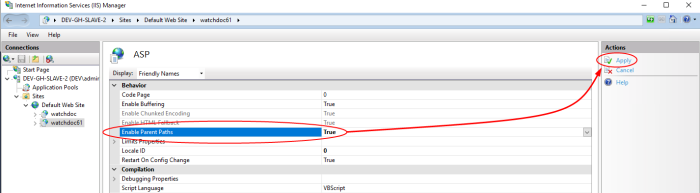
-
Quittez Internet Information Services (IIS) Manager.
Modifier le chemin de Doxense.Watchdoc.CrystalProxy.dll dans la base de registre
-
Revenez dans l'explorateur et ouvrez le dossier C:\tmp\Watchdoc61 ;
-
vérifiez que ce dossier contient a minima la dll Doxense.Watchdoc.CrystalProxy.dll et l’utilitaire regproxy.bat ;
-
ouvrez la dll Doxense.Watchdoc.CrystalProxy.dll à l'aide de regproxy.bat
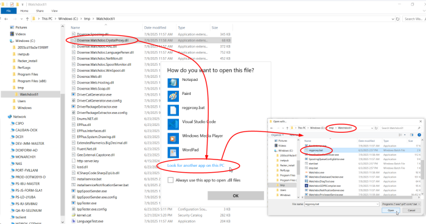
è Cette opération modifie la base de registre. Désormais, pour instancier la classe Doxense.Watchdoc.Proxy61, la dll est recherchée dans le dossier temporaire spécifique qui a été créé.
Vérifiez la disponibilité de l'ancien site web
Mettre à jour Watchdoc sur le master
-
Dans le dossier où ont été décompressés les fichiers, double-cliquez sur WatchdocUpdate.exe pour lancer l'exécutable de mise à jour :
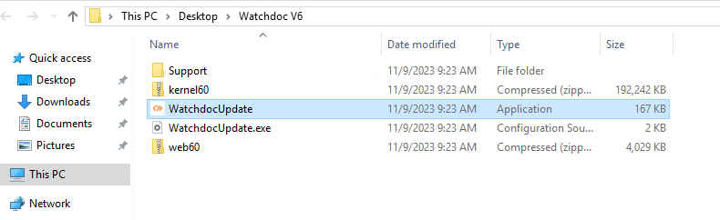
{kind=link}
-
Approuvez le message qui vous informe qu'une nouvelle clé de licence est nécessaire.
-
Dans l'interface affichée, vérifiez les chemins d'accès des paramètres, et cochez les cases correspondant aux actions à activer ou à désactiver. Par défaut, une sauvegarde est effectuée avant mise à jour. Pour inclure la banque de pilotes (Driverstore) dans la sauvegarde, cliquez sur Full backup (include .zip and .jsdb).
-
puis cliquez sur le bouton Update Watchdoc !
è Un curseur indique la progression de la mise à jour.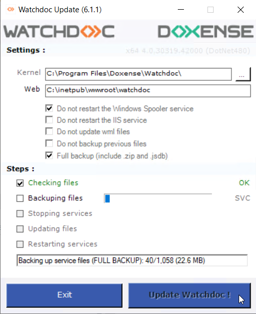
-
Si vous n'avez pas coché les cases empêchant leur redémarrage, le service IIS et le spouleur sont arrêtés puis redémarrés.
-
Confirmez le redémarrage du service IIS dans la boîte de dialogue affichée :
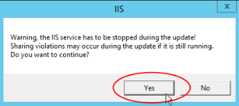
è un message vous informe de la fin et du succès de la mise à jour :
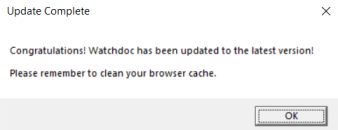
Vérifier la mise à jour de Watchdoc
-
Dans la page d'accueil de l'interface web d'administration de Watchdoc, vérifiez que le numéro de version a été mis à jour :
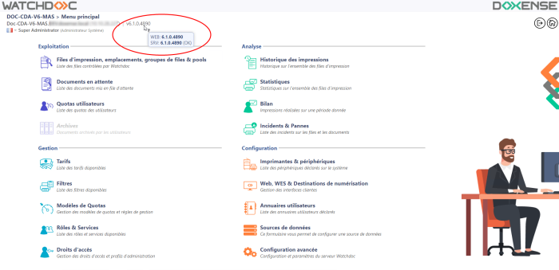
-
Dans l'interface web d'administration de Watchdoc, vérifiez que la nouvelle version de Watchdoc parvient toujours à communiquer avec la base de données (Menu principal, section Configuration > Configuration avancée > Base de statistiques) :
-
cliquez sur Editer la configuration ;
-
cliquez sur Vérifier la base de données.
è un message vous indique si Watchdoc parvient à contacter la base de données :
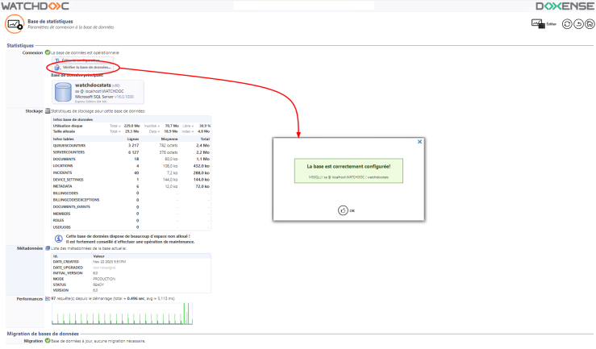
-
Si Watchdoc ne parvient pas à contacter la base de données, redémarrez le service Watchdoc.
Mettre à jour la Console de Supervision Watchdoc (WSC) sur le master
Si vous l'utilisez, mettez à jour WSC.
-
Dans le dossier où les fichiers ont été décompressés, double-cliquez sur SupervisionUpdater.exe pour lancer l'exécutable de mise à jour :
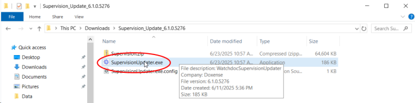
- Dans l'interface Supervision Console Update affichée, vérifiez les chemins d'accès des paramètres, puis cliquez sur le bouton Update :
è un message vous informe de la fin et du succès de la mise à jour :
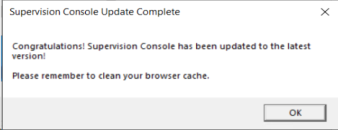
Vérifier la mise à jour de la Console de Supervision Watchdoc (WSC)
Dans la page d'aide de l'interface web d'administration de WSC vérifiez que le numéro de version a été mis à jour :
-
Depuis le menu principal, cliquez sur l'entrée Aide du menu vertical.
-
La section A propos de la Console de supervision affiche le numéro de version :
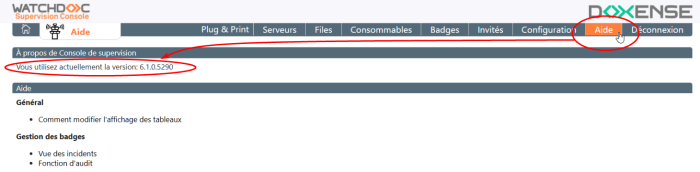
Mettre à jour les autres serveurs du domaine (slaves)
Lorsque Watchdoc / WSC est installé en domaine (configuration master/slaves), une fois que le serveur master est à jour, il est nécessaire de mettre à jour tous les autres serveurs qui en dépendent.
Vous pouvez procéder de manière manuelle et unitaire : appliquez les étapes précédentes sur chaque serveur du domaine.
Vous pouvez également procéder en masse : propagez la mise à jour du serveur master vers les autres serveurs à l'aide de la fonction "Updater"de WSC (cf. Mise à jour d'un domaine).